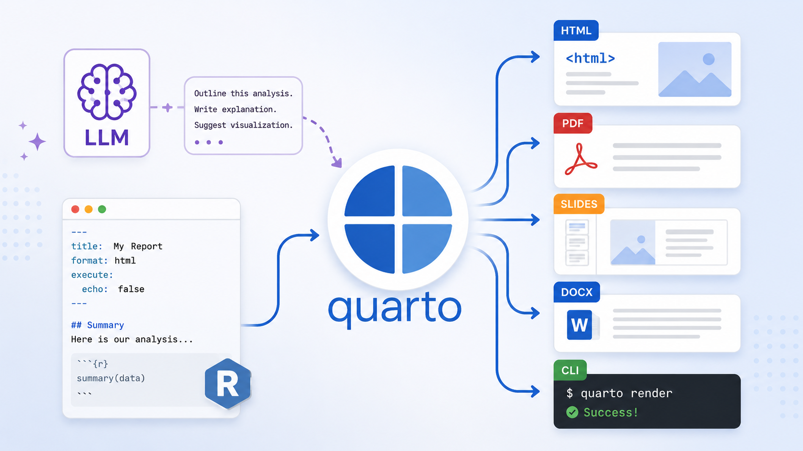

The Unreasonable Effectiveness of Quarto
quarto
AI
productivity
Why you should start asking your favorite LLM (cough Claude cough) to produce .qmd files

Thariq at Anthropic recently posted a wonderful thread titled “The Unreasonable Effectiveness of HTML”, arguing that markdown files (the dominant file format used by agents to communicate with us) are inferior to raw HTML, and that having agents generate HTML files is a much preferred output. I largely agree and don’t dispute his reasoning — HTML really is a great output format that provides a richness that markdown simply cannot produce.
But as I was reading his thread, I couldn’t help but think:
“man…if only he knew about Quarto”
Quarto brands itself as “an open-source scientific and technical publishing system,” but it is so, so much more than that. Quarto is funamentally an abstraction layer that separates content from format. It produces documents that are always current, always flexible, and (as I’ll argue in this post) exceptionally good for working with LLMs.
Just like Thariq does in his post about HTML, I’ll focus this post on some of the reasons why adding a “q” in front of “md” is my preferred approach for working with LLM outputs.
Rich output through code
Thariq’s central argument is about information density. HTML can render styled tables, SVG diagrams, interactive charts, and color-coded content — things that flat Markdown simply cannot do. That is all true.
But Quarto docs can produce all of that through code. Drop an R or Python block into a .qmd file and you get an interactive plotly chart, a beautifully formatted table, a ggplot visualization with your exact color palette. The output is just as rich as anything HTML can show, but the difference is that the source file stays readable. Any user can directly read the markdown content inside the .qmd file, and of course can choose to render it into a desired output to read it in a preferred form.
And there’s a second advantage that goes beyond visual richness: a .qmd document stays current. An HTML document is a snapshot. Once Claude writes those numbers into the markup, they are frozen. If the data changes, you have to ask Claude to re-generate the HTML again, or you have to edit the HTML by hand 😱.
A .qmd file runs code at render time. Just point it at the updated CSV, run quarto render, and the tables and charts update automatically.
One source, any format
HTML is one output format. If the report you made for yourself turns out to be something your boss wants as a Word document, you are either asking Claude again or doing an imperfect copy-paste.
A .qmd file renders to HTML, PDF, Word, or a RevealJS presentation. Rather than spending time or tokens on the output format, you can focus on the output content, leaving the formatting to Quarto. If you need to make a change, just modify the YAML header and run quarto render. The content stays exactly the same, only the output format changes.
What’s even better is that most LLMs and agents like Claude code understand Quarto syntax very, very well, so you don’t even really have to think too much about what specific changes in the YAML header you need to make. Just tell CC “I’d like this as a pdf” and it’ll update the yaml. That is way easier (and way faster) than having CC re-generate an entire new output.
To me, this is the right division of labor: Claude writes the content, Quarto handles the format
Token efficiency
When you ask Claude to produce a format directly (HTML, PDF, Word, etc.) you pay for all the boilerplate that format requires. HTML needs a full document structure with a <head> and embedded CSS. LaTeX needs \documentclass declarations and everything wrapped in \begin{document}. Office Open XML (the format inside a .docx file) is hundreds of lines of namespace-laden markup just to hold a few paragraphs. These things add up.
With .qmd, you always pay for the same thing: clean Markdown plus a few lines of YAML. Whether you are targeting HTML, PDF, or Word, the source file looks almost identical — and so does the token count.
To put numbers on this, I ran the same prompt through Claude 8 times, each time asking for a different output format. The prompt asked for a summary report on EV charging standards (CCS, CHAdeMO, and NACS) with an introduction, comparison table, pros/cons section, and conclusion (I study the EV market, so this is what I came up with). The example is rich enough to surface real formating overhead costs.
I split the conditions into two groups:
- Direct formats: Claude produces the final file itself — a complete HTML file (with
<head>, embedded CSS,<body>), a compilable LaTeX document, Office Open XML (the raw XML inside a.docx), and plain Markdown. - Quarto formats: Claude produces a
.qmdfile with the appropriateformat:in the YAML frontmatter —html,pdf,docx, andgfm. The user renders it locally withquarto render.
Everything else was held constant: same model (claude-haiku-4-5), same document specification, same max_tokens limit. The full Python script is available if you want to run it yourself.
{kind=link}
The numbers speak for themselves. Here is the full breakdown:
| Output Type | Direct Tokens | Quarto Tokens | Direct ÷ Quarto |
|---|---|---|---|
| Word | 8,097 | 1,121 | 7.2× |
| Html | 4,046 | 1,022 | 4× |
| 1,992 | 1,123 | 1.8× | |
| Markdown | 1,267 | 1,282 | 1× |
| Output Type | Direct Chars | Quarto Chars | Direct ÷ Quarto |
|---|---|---|---|
| Word | 19,475 | 5,303 | 3.7× |
| Html | 16,559 | 4,850 | 3.4× |
| 7,835 | 5,526 | 1.4× | |
| Markdown | 5,892 | 5,885 | 1× |
The worst case is asking Claude to produce Office Open XML directly: 8,097 output tokens just to get the raw XML that lives inside a .docx file 🤦. Ask for a Quarto document targeting Word instead and you get the same rendered output from 1,121 tokens. That’s a 7× reduction.
HTML direct (4,046 tokens) costs 4× more than Quarto HTML (1,022 tokens). LaTeX direct (1,992) costs 1.8× more than Quarto PDF (1,123). Only plain Markdown is in the same ballpark as Quarto — because Markdown already is essentially what .qmd files look like without the YAML frontmatter.
Now look at the Quarto column specifically: HTML, PDF, and Word all land between 1,000 and 1,100 tokens. With .qmd, the format you choose barely affects the cost. The “one source, any format” approach is not just convenient, it’s also cheaper!
Version control and human editability
Thariq flags this himself in his FAQ: “HTML diffs are noisy and hard to review compared to Markdown.” That is a real cost, and it compounds the more you iterate on a document.
But a .qmd file is just plain text. You can put it in git, review changes, and edit it in any text editor. When you want to change a sentence, you just change the sentence.
Most documents Claude produces need at least one human edit pass before they are ready. That edit is fast and low-friction with a .qmd file. With raw HTML, you are wading through markup just to find the paragraph you want to change.
Content and presentation stay separate
With raw HTML, styling is baked into the document. Thariq’s solution for consistent styling is to maintain a design system HTML file and pass it to Claude as context so that new documents match. That works, but it is a workaround for a problem that .qmd does not have.
In a .qmd file, the content is simply Markdown. The presentation, in contrast, lives in the YAML header, or in a shared theme file that every document on your site inherits from. Change the font or color scheme once and every document updates. Or leverage Quarto’s _brand.yml feature to customize the appearance of your documents across multiple formats.
This is the way.
You don’t even need to know Quarto to use it
One of the most amazing things about tools like Claude code is that it already knows a LOT about Quarto - all the docs, all the formatting requirements, all the syntax. All you have to do is ask it to produce a .qmd file and it will understand for the most part.
Just change your prompt from:
“Produce a Word doc…”
to:
“Produce a Quarto doc that renders to a Word doc…”
That’s it!
Of course, it’s always better to have a more complete understanding of the tools you’re using, but you don’t need to let unfamiliarity with Quarto (if you’re new to it) be a hindrance to you using Quarto with LLMs. Just start building and learn along the way. I find Quarto incredibly intuitive to use once you see a few examples, and it’s also very easy to trace changes that agentic tools make to your code in Quarto since it’s mostly just markdown.
But wait - it gets better! Because the amazing community of developers out there have already started making skills for CC that you can download and use to even further customize CC’s output! For example, check out the Posit Quarto skills, maintained by the absolute Quarto wizard Mickaël Canouil. Leveraging skills and other settings in your CLAUDE.md file, you can achieve some very effective and efficient agentic workflows.
Conclusion
There’s so much more I want to write about, but that’s all I have time for at the moment (I didn’t even mention lua filters - omg you won’t believe what you can achieve with Claude Code, Quarto, and Lua!).
For now, I hope you give Quarto a try with your favorite LLM. As the world of AI agents continues to evolve, I expect Quarto will become an even more useful and powerful tool.